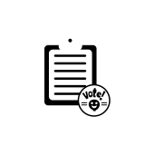
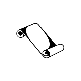

SEAN M WRIGHT

HI! I ORGANIZE. I MANAGE. I COORDINATE. I'M ALSO A WALKING LIBRARY. I AM YOUR GO-TO MAN ON ANY CAMPAIGN.
WHAT I CAN DO FOR YOU
I've veritable experience in every aspect of the campaign cycle.
CONTENT
● digital creator ● fundraising ● newsletter ● daily briefs ● speech writing ●

MANAGEMENT
● office ● interns ● teams ● events ● recruit ● train ● campaign ● VAN ● candidate ● message ●

POLICY
● policy ● opposition ●
VIRGINIA
Virginia Coordinated Campaign - Organizer

Charlottesville, VA
05/16 - 11/16
- Recruited and trained over 143 unique volunteers that registered more than 900 people to vote.
- Executed a Get Out the Vote effort including canvassing and phone banking events to effectively increase turnout by 3.2% in Charlottesville, VA.
- Managed a highly local digital organizing campaign to engage volunteers.
- Created digital content to generate grassroots enthusiasm, recruit and retain volunteers on social media, including maintaining a Facebook group that grew to over 160 followers.
- Organized over 7 community events and coordinated logistics for hundreds of attendees including activists, community leaders, elected officials, and the press.
- Built a neighborhood teams of 400 fellows and volunteers to meet and exceed weekly goals.
- Worked extensively with VAN to support a data-driven and metrics-based program, ensured data quality, cut turf, and create virtual phone banks.
Want to work together?
I am currently available for hire. Please reach out and say hello.
site by xtian
logos here